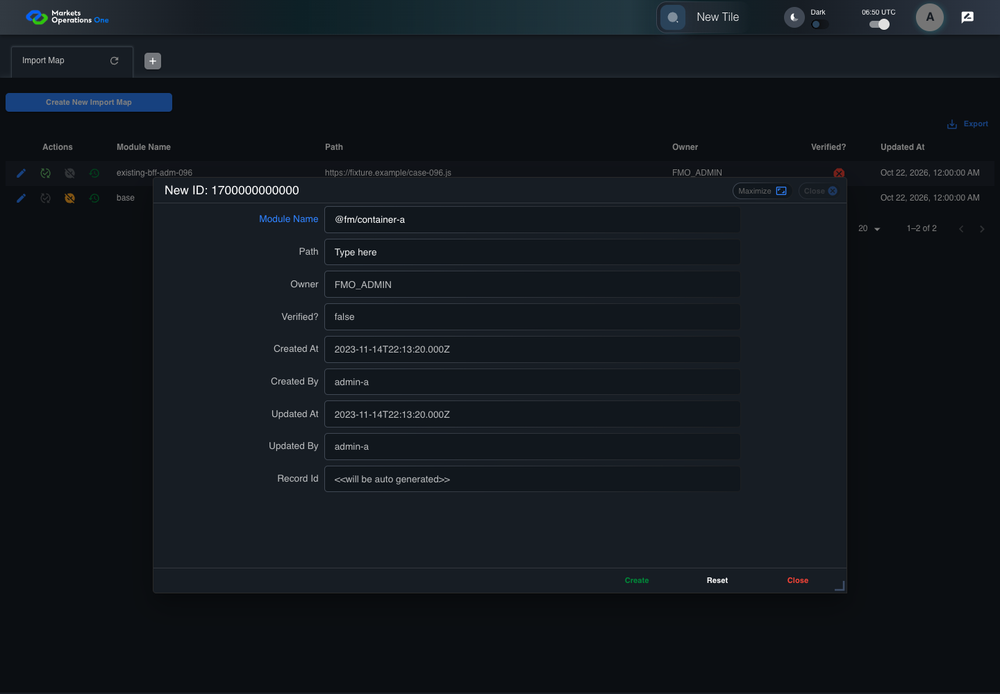
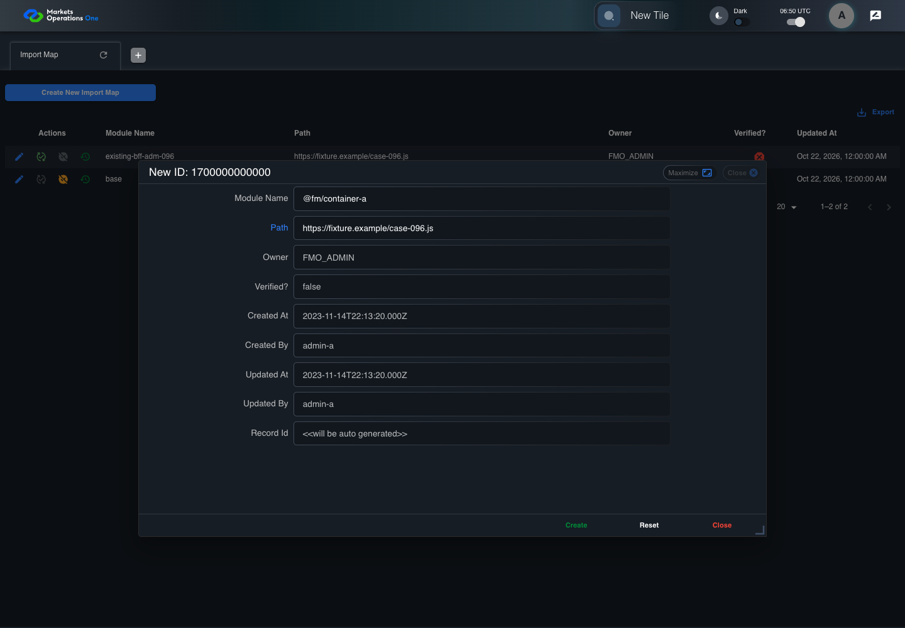
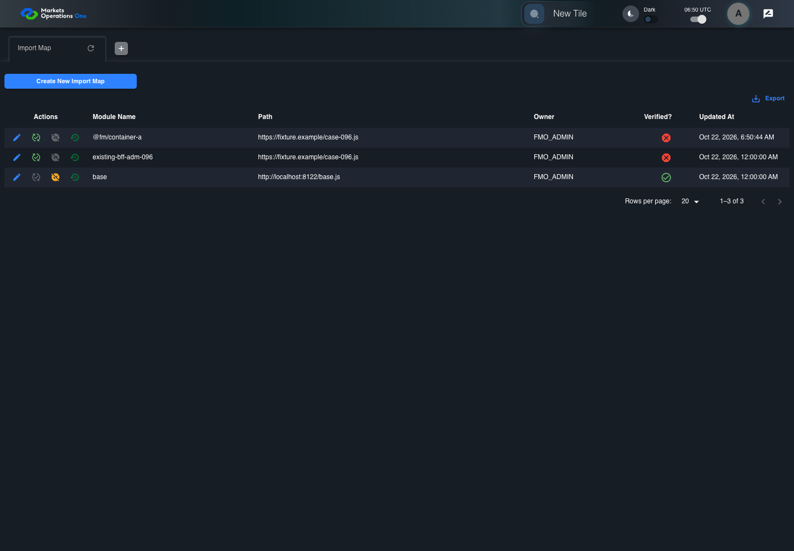

BFF-ADM-096 current BFF administration through actual UI
FAIL · application/run-072/bff-adm-096-current-bff-administration-through-actual-ui-dd3cced1d3b9-attempt-1 · ACTUAL_APPLICATION_LOCAL_SERVICES
Actual current React and exact-current BFF admin controllers/services/JPA with actual migration DDL in disposable PostgreSQL. Controlled OUD/EMS2 identities and local Spring bootstrap. Fixture SQL seeds/mutates isolated records; service errors are actual database errors. Undefined agreed messages remain unresolved acceptance.
2026-10-22T06:50:40.653Z to 2026-10-22T06:50:49.872Z
Assertions and result · Artifact manifest · Exact run inputs and source hashes
Result SHA-256:9905880a620d3e6c2cfd4584cee4f9a709da99723a0f4e9986d4a32ca8cd84c6Retained failure details
[
{
"message": "Error: \u001b[2mexpect(\u001b[22m\u001b[31mlocator\u001b[39m\u001b[2m).\u001b[22mtoBeVisible\u001b[2m(\u001b[22m\u001b[2m)\u001b[22m failed\n\nLocator: locator('.MuiAlert-root').filter({ has: locator('.MuiAlert-message') })\nExpected: visible\nTimeout: 5000ms\nError: element(s) not found\n\nCall log:\n\u001b[2m - Expect \"toBeVisible\" locator('.MuiAlert-root').filter({ has: locator('.MuiAlert-message') }) with timeout 5000ms\u001b[22m\n\u001b[2m - waiting for locator('.MuiAlert-root').filter({ has: locator('.MuiAlert-message') })\u001b[22m\n",
"stack": "Error: \u001b[2mexpect(\u001b[22m\u001b[31mlocator\u001b[39m\u001b[2m).\u001b[22mtoBeVisible\u001b[2m(\u001b[22m\u001b[2m)\u001b[22m failed\n\nLocator: locator('.MuiAlert-root').filter({ has: locator('.MuiAlert-message') })\nExpected: visible\nTimeout: 5000ms\nError: element(s) not found\n\nCall log:\n\u001b[2m - Expect \"toBeVisible\" locator('.MuiAlert-root').filter({ has: locator('.MuiAlert-message') }) with timeout 5000ms\u001b[22m\n\u001b[2m - waiting for locator('.MuiAlert-root').filter({ has: locator('.MuiAlert-message') })\u001b[22m\n\n at BffAdminApp.errorAlert (/Users/lushevol/code/github/ratan-release-impact/workbench/e2e/support/bff-admin-app.ts:166:169)\n at /Users/lushevol/code/github/ratan-release-impact/workbench/e2e/audit-specs/bff-admin.spec.ts:49:166\n at AuditCapture.step (/Users/lushevol/code/github/ratan-release-impact/workbench/e2e/support/audit-fixture.ts:94:21)\n at /Users/lushevol/code/github/ratan-release-impact/workbench/e2e/audit-specs/bff-admin.spec.ts:18:27",
"location": {
"file": "/Users/lushevol/code/github/ratan-release-impact/workbench/e2e/support/bff-admin-app.ts",
"column": 169,
"line": 166
},
"snippet": "\u001b[90m at \u001b[39m../support/bff-admin-app.ts:166\n\n 164 | }\n 165 | async assertUnchanged():Promise<void>{expect(await this.snapshot()).toEqual(this.expectedPersisted);expect(await this.gridSnapshot()).toEqual(this.initialGrid);}\n> 166 | async errorAlert(exact?:string):Promise<void>{const alert=this.page.locator('.MuiAlert-root').filter({has:this.page.locator('.MuiAlert-message')});await expect(alert).toBeVisible();await expect(alert).toHaveClass(/MuiAlert-standardError|MuiAlert-filledError|MuiAlert-outlinedError/);if(exact)await expect(alert.locator('.MuiAlert-message')).toHaveText(exact);else {const mutation=[...this.requests].reverse().find(request=>['create','update','audit'].includes(request.operation));expect(mutation?.status).toBeGreaterThanOrEqual(400);await expect(alert.locator('.MuiAlert-message')).not.toHaveText('');await this.audit.record('undefined-message-contract',{canonical:'Agreed message is unavailable. Only real error response and visible nonempty error are characterized.',actual:await alert.innerText()});}}\n | ^\n 167 | async cell(name:string,id:string){return this.ui.reveal(adminFields[name]??name,id);}\n 168 | }\n 169 |"
}
]Machine observations
- actual-identity-projection.json
cb6c109cd9c21a355d807419b7fad258dfec380ac2761eab69d49558cbcf87a3 - baseline-inputs.json
413c7234c31afc0dc88977546f489e0fa9d6a19c3dd06f8a2e76f30e2eda0ce6 - bff-boundary.json
021e4c1c7d97b6362c847b758029ed91dd299d65cf0a7332f6d4057e50ad4eb0 - committed-ui-submission-comparisons.json
0f664cac4564035ea620a7a5632ca8c1de6db89fed0ce9e4ae28d52eb27b658c - creation-clock.json
95eed65c453a7ad98957771d6f1e318fd2994447729742fc689df7ad60fad402 - fixture-step-4.json
045559a90aa9f5fe7245de01fbeeef8b70dc2eac1b4e28da55314c8c7dd14975 - fixture-step-5.json
69fbbf3772daffe651202efa465ce2a4af8a674583674a00c2c8a47628d84ae1 - initial-persisted-records.json
a6b67bdb7bfad26969707e015eae727c9562f05a347c93202727f82f39a7c8f5 - persisted-after-submit.json
fbd3d1a42065df992178e29bad7559fa61c54611653cd4ca6a87ef613d3fdbf2 - rejection-or-policy-observation.json
7c4dbc867d9d3d9fac8d8924544cdb873aa66b0d3b673926acc94b576b7db19c - ui-origin-bff-requests.json
b4de846aece961677a78415ebb3ba1ae4b55fd1cd238ed0c09795a9fea2ac4fe
Screenshot capture: CAPTURED. Named frames: 12.
Step screenshot evidence: INCOMPLETE. 11/12 canonical steps have execution screenshots.
Step 12 has no screenshot from an executed step.
Canonical step timeline
Given Admin A uses subject "admin-a" with role "FMO_ADMIN" in an isolated authenticated browser
Execution: PASSED.1. step-01 Visible state after step 1: Given Admin A uses subject "admin-a" with role "FMO_ADMIN" in an isolated authenticated browser
2026-10-22T06:50:42.634Z · 1440×1000
Step: /Users/lushevol/code/github/ratan-release-impact/workbench/tasks/ui-test-coverage-20261022/test-cases.md:18763
SHA-256:1536708ce51e8558382e6adb5949eb51bab3a95ae1975b8d4ddacc0016f0a011And the controlled Import Map fixture records the initial grid rows and persisted values
Execution: PASSED.
2. step-02 Visible state after step 2: And the controlled Import Map fixture records the initial grid rows and persisted values
2026-10-22T06:50:42.763Z · 1440×1000
Step: /Users/lushevol/code/github/ratan-release-impact/workbench/tasks/ui-test-coverage-20261022/test-cases.md:18764
SHA-256:1536708ce51e8558382e6adb5949eb51bab3a95ae1975b8d4ddacc0016f0a011And the controlled creation clock returns 1700000000000 milliseconds
Execution: PASSED.3. step-03 Visible state after step 3: And the controlled creation clock returns 1700000000000 milliseconds
2026-10-22T06:50:42.812Z · 1440×1000
Step: /Users/lushevol/code/github/ratan-release-impact/workbench/tasks/ui-test-coverage-20261022/test-cases.md:18765
SHA-256:9ec6f01309c4571c4973fd9e8e6e16fe27541648513430afcbe85edf865cc9c6And the baseline fixture data defines "Module Name" as "container-096"
Execution: PASSED.
4. step-04 Visible state after step 4: And the baseline fixture data defines "Module Name" as "container-096"
2026-10-22T06:50:42.862Z · 1440×1000
Step: /Users/lushevol/code/github/ratan-release-impact/workbench/tasks/ui-test-coverage-20261022/test-cases.md:18766
SHA-256:9ec6f01309c4571c4973fd9e8e6e16fe27541648513430afcbe85edf865cc9c6And the baseline fixture data defines "Path" as "https://fixture.example/case-096.js"
Execution: PASSED.
5. step-05 Visible state after step 5: And the baseline fixture data defines "Path" as "https://fixture.example/case-096.js"
2026-10-22T06:50:42.913Z · 1440×1000
Step: /Users/lushevol/code/github/ratan-release-impact/workbench/tasks/ui-test-coverage-20261022/test-cases.md:18767
SHA-256:9ec6f01309c4571c4973fd9e8e6e16fe27541648513430afcbe85edf865cc9c6When Admin A clicks the button labeled "Create New Import Map" on the Import Map administration page
Execution: PASSED.6. step-06 Visible state after step 6: When Admin A clicks the button labeled "Create New Import Map" on the Import Map administration page
2026-10-22T06:50:43.129Z · 1440×1000
Step: /Users/lushevol/code/github/ratan-release-impact/workbench/tasks/ui-test-coverage-20261022/test-cases.md:18768
SHA-256:8399ce2b0bbde5b543499f4e2ee99440f52d0a81be03850b4e6fca81a6b42afbThen the dialog titled "new ID: 1700000000000" is visible on the Import Map administration page
Execution: PASSED.7. step-07 Visible state after step 7: Then the dialog titled "new ID: 1700000000000" is visible on the Import Map administration page
2026-10-22T06:50:43.225Z · 1440×1000
Step: /Users/lushevol/code/github/ratan-release-impact/workbench/tasks/ui-test-coverage-20261022/test-cases.md:18769
SHA-256:6e793c6957c4ff9c658994643b8b296f5db708ea994e90bf3899ab12fe856d4dWhen Admin A fills the textbox labeled "Module Name" with "@fm/container-a" in dialog "new ID: 1700000000000"
Execution: PASSED.
8. step-08 Visible state after step 8: When Admin A fills the textbox labeled "Module Name" with "@fm/container-a" in dialog "new ID: 1700000000000"
2026-10-22T06:50:43.671Z · 1440×1000
Step: /Users/lushevol/code/github/ratan-release-impact/workbench/tasks/ui-test-coverage-20261022/test-cases.md:18770
SHA-256:56816d6e9ea65fdf5f21d7fb63395ee9875e67e318d8abbf914a25f039534d48And Admin A fills the textbox labeled "Path" with "https://fixture.example/case-096.js" in dialog "new ID: 1700000000000"
Execution: PASSED.
9. step-09 Visible state after step 9: And Admin A fills the textbox labeled "Path" with "https://fixture.example/case-096.js" in dialog "new ID: 1700000000000"
2026-10-22T06:50:44.100Z · 1440×1000
Step: /Users/lushevol/code/github/ratan-release-impact/workbench/tasks/ui-test-coverage-20261022/test-cases.md:18771
SHA-256:4ce2a57e9948ccddd27d84fadf17863f3efa75574cbacaa5cb7c8b1814ca4dd8And Admin A clicks the button labeled "Create" in dialog "new ID: 1700000000000"
Execution: PASSED.
10. step-10 Visible state after step 10: And Admin A clicks the button labeled "Create" in dialog "new ID: 1700000000000"
2026-10-22T06:50:44.346Z · 1440×1000
Step: /Users/lushevol/code/github/ratan-release-impact/workbench/tasks/ui-test-coverage-20261022/test-cases.md:18772
SHA-256:8f05aff9eaa81745713d0f324aa46b5bb23f4a3ce41782bdb70bebd179051a21Then the alert with severity "error" in the portal snackbar displays the agreed message for a namespace validation error
Execution: FAILED.
11. step-11-failure Visible state when step 11 failed. Later steps did not execute.
2026-10-22T06:50:49.423Z · 1440×1000
Step: /Users/lushevol/code/github/ratan-release-impact/workbench/tasks/ui-test-coverage-20261022/test-cases.md:18773
SHA-256:8f05aff9eaa81745713d0f324aa46b5bb23f4a3ce41782bdb70bebd179051a21And the Import Map data grid with column "Record Id" row identifiers and loaded field values equal the initial grid snapshot on the Import Map administration page
Execution: NOT_EXECUTED.No screenshot is recorded for this step. No executed state is claimed.
Additional named frames

The visible state when the test failed.
2026-10-22T06:50:49.555Z · 1440×1000Step: Test source: /Users/lushevol/code/github/ratan-release-impact/workbench/e2e/audit-specs/bff-admin.spec.ts:11
SHA-256:
8f05aff9eaa81745713d0f324aa46b5bb23f4a3ce41782bdb70bebd179051a21Screenshots establish visible state only. Assertions and traces support functional claims.